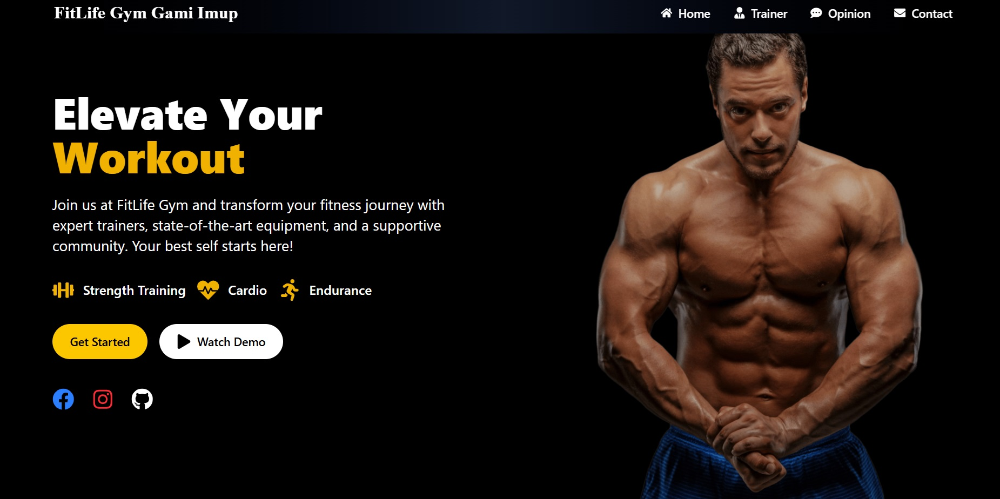
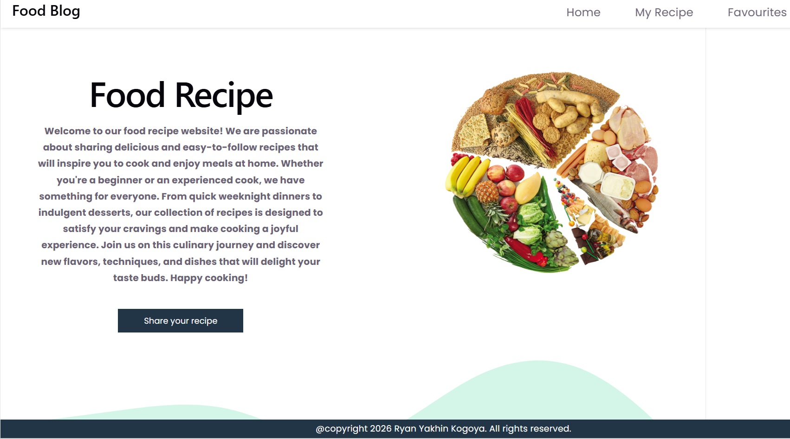

Ryan Yakhin Kogoya
Web Developer
Web Developer
I am a Junior Web Developer focused on building web applications using HTML, CSS, and JavaScript. I have experience in creating responsive user interfaces, integrating REST APIs, and using Git and GitHub. I have also developed several applications as part of my portfolio.

This website is a landing page for a gym (FitLife Gym) designed to attract users to join or try the services offered.
I built this website using React as the frontend framework to create reusable and interactive components, and Tailwind CSS
to speed up styling and deliver a modern, responsive design.
Click here to see

This website is a Food Recipe application built using the MERN Stack (MongoDB, Express.js, React, Node.js)
that allows users to view, add, and manage food recipes online.
Click here to see
Phone/WhatsApp: +6281219946735
Email: ryanyakhin4@gmail.com
GitHub: https://github.com/Ryan-Yakhin